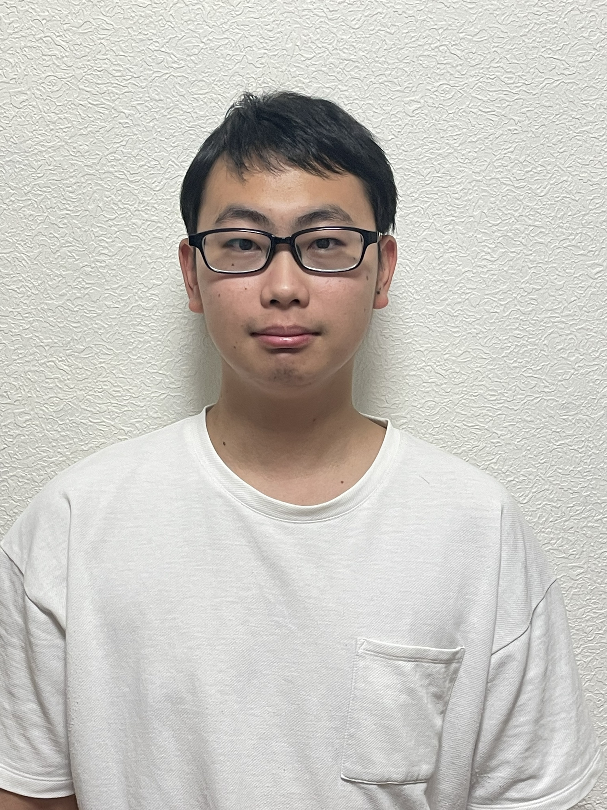

I work for a civil engineering consultancy.
My job is public transportation planning for local governments.
My work covers bus networks, sea routes, and traffic volume analysis.
My research as a student covered data mining of public transportation data (Automated Fare Collection / smart card data), data bias analysis, disaster prevention, and so on.
| Name | MIYAZAKI Kazuki |
| Original Name | 宮﨑 一貴 |
| Nationality | Japan |
| Birthday | August 1997 |
| Work | Fukken Co., Ltd. (FUKKEN) |
| Department | General Planning Department |
| Position | Engineer |

| Start date | End date | Affiliation | Details |
|---|---|---|---|
| 2025.4.1 | ~ | Fukken Co., Ltd. | Engineer |
| 2022.4.1 | 2025.3.31 | Kumamoto University | Doctor of Engineering |
| 2020.4.1 | 2022.3.31 | Kumamoto University | Master of Engineering |
| 2018.4.1 | 2020.3.31 | Kumamoto University | Bachelor of Engineering |
| 2013.4.1 | 2018.3.31 | National Institute of Technology (KOSEN), Kure College | Title of Associate (Engineering) |
* Research internship: 2024.7.27~2024.8.25 Tongji University (China)
Links: Researchmap, Google Scholar
* Researchmap contains very detailed information.
In surveys, the characteristics of surveyors, such as their gender and how they approach respondents, can affect the response rate.
We therefore experimentally varied these characteristics and examined their effects.
Public transportation users change from day to day.
However, conventional models have a fixed structure and cannot capture such day-to-day changes.
We therefore developed a state-space model whose parameters vary daily.
This approach revealed how tram users' preferences change over time.
2022.4.1~2025.3.31 Well-Being Cross-disciplinary Doctoral Human Resource Development Program